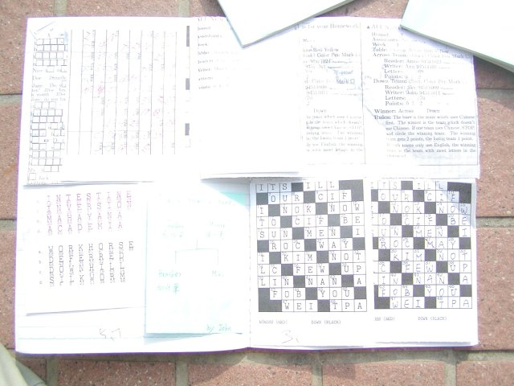

My work with dictation started with paired crossword-filling activities, in either groups of four or two. I used various crossword creating programs with the text and vocabulary from the lesson as clues and crossword entries.

Carried out as homework, the student pairs were supervised by an MC and a guard, other students who were not doing the dictation, but were getting a grade for their supervision of the crossword-filling students. The students doing the crossword were challenged by a time limit, or competition with another pair.
Before working with crosswords, I was doing picture dictations in pairs.
For the last 2 years, in Freshman English classes outside the department and in listening/conversation classes in the AFL Department with lower-level unmotivated learners, I have been doing pair dictations of conversation texts, as an exam activity. Student A reads one half of a text, a dialog between 2 people, to their partner B, who writes it down. Then B reads to A. It is surprisingly challenging, because I don't allow any Chinese.
I also use dictation in class, with one or two students dictating to the rest of the class.
Dictation can be boring, but with the computer-generated materials I have developed where students have to fill in letters, rather than words, the students generally find it interesting. This is because there are limited choices and feedback is precise and generally quick. This is motivating.
Class dictations where 1 or 2 students read the passage and the rest of the class, tries to fill in the letters is, surprisingly quite interesting to my lower-level students at the moment.
I wouldn't use dictation as much with higher-level students. With them, communication, or use of language for non-language ends, in other words, listening and speaking AND thinking, must be an objective. With lower-level students, they may resist more than encoding (into speech) and decoding (into a representation of speech), the psychological processes involved in dictation.
ExamInstructions for a teacher substituting for me, conducting the exam.